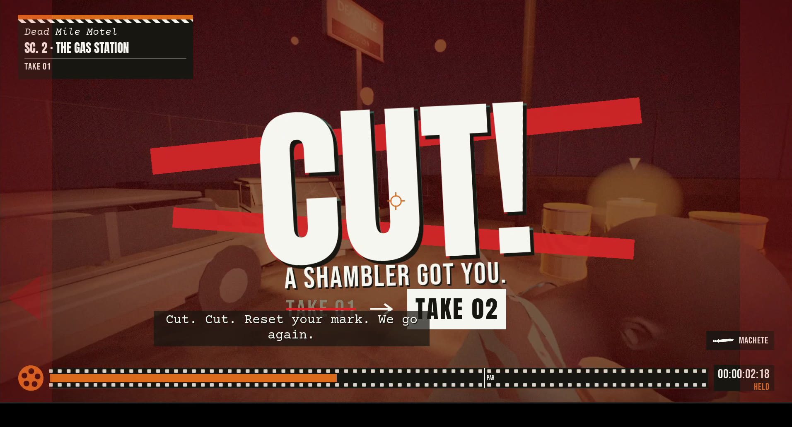
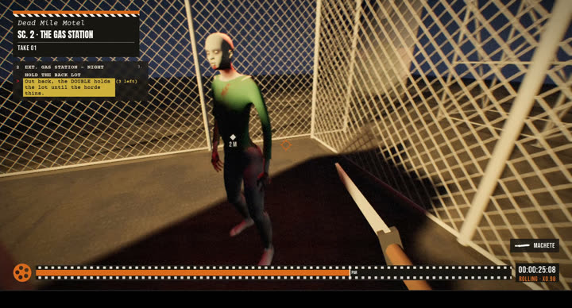
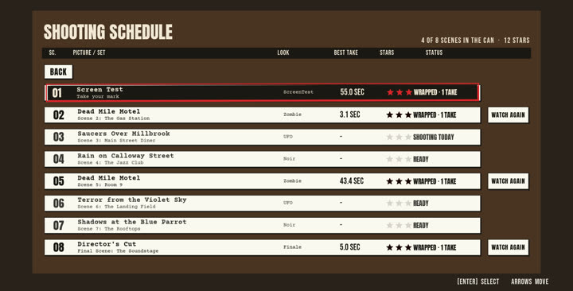
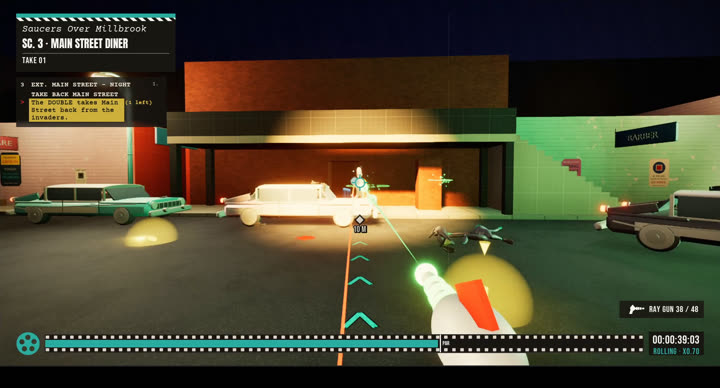

Final day, round one: fixes only
I played the overnight build at 09:40 and wrote one long note; by 10:57 five sessions had fixed all of it, from missing tutorial lines to a death screen you can actually read, and the build went green.
Day 4, Sun 15 NovHour 79

The night crew left me a build at 07:25 (9f1b512a9, 21 of 21 journey steps from the zip, 128 fps standing still in the first level). I played it when I got back, and the first thing I wrote was the rule for the day:
"Okay this is a the final day, we can't be going on tangents reall what is in the game now is our work adding is risky."
The rest of that note was a list. The tutorial was missing voice lines on its later objectives. Big objective text left too soon. Some enemies spawned in front of me. The UFO was far too loud. Dying needed "slightly more emphasis", because "it can be confusing to restart suddenly without necessarily knowing why". The credits flashed black between clips, the Director's voice still played over them, and every skip should be hold Space. And the shooting schedule wouldn't let me replay the Screen Test.
The Director turned that into five tasks (T-0210 to T-0214), one per session, and held one merge window. When I asked "The enemy change could be too large maybe?", it agreed and cut that task down to data only. npc-ai then found that only 13 "reinforcement" rooms (one per level) popped in at all. The fix was to place them in the level kits from the start, which world-2 did in seven kits.

Dead Mile's back lot after T-0212: the fence-corner zombies are already standing there when the camera first sees them. Checked at three frames a second for pop-in.
The shooting schedule after T-0213: the Screen Test is at the top and can be played again.
Main Street with the saucer overhead. Audio made its hum really quiet and attached it to the saucer, so it fades with distance (T-0214).
All five fix sets were with the engine by 10:00, so the window opened early. Green at 10:57 on ebc091152. The engine's own reviewer passed the tutorial: every note now has a voice line and a subtitle, including "Time slows right down, but it never stops."
Then the packaged run-through failed it, which is the next post.